본질에 집중한 가벼운 웹을 만듭니다.
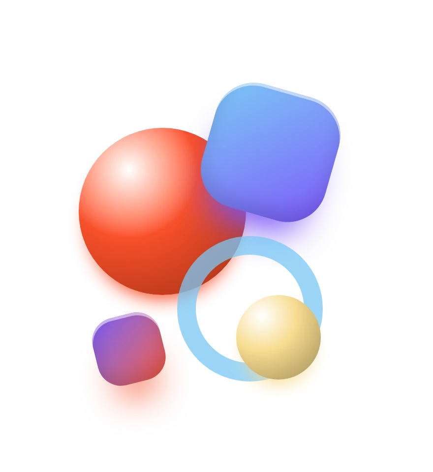

작게 만들수록 더 정교하게. 보람찬크루가 지키는 것들이에요.
본질에 집중한 가벼운 웹을 만듭니다.
5폭휴대폰부터 넓은 화면까지 검사하는 화면 폭
60fps실제 브라우저에서 잰 움직임
불필요한 무거움을 덜어내고, 어떤 기기에서 열어도 흔들리지 않는 단단한 구조와 매끄러운 움직임을 구현합니다. 프레임워크 없이 순수 HTML·CSS·JS 모듈로 만들어, 어느 서버에 올려도 그대로 가볍게 돌아갑니다.
쓰는 것
6개직접 눌러 보는 작업·데모
0개프레임워크 — 순수 HTML·CSS·JS
화면 설계에서 코드, 움직임까지 한 크루가 끝까지 이어서 만듭니다.
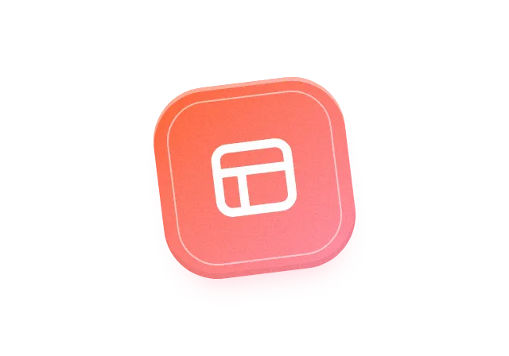
DESIGN
기획의 의도를 살린 구조와 시안. 사진과 글이 가장 잘 읽히는 첫 화면.
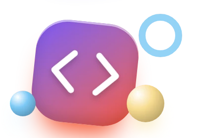
BUILD
반응형 사이트를 프레임워크 없이. HTML·CSS·순수 JS 모듈, 2단계 이내 구조.
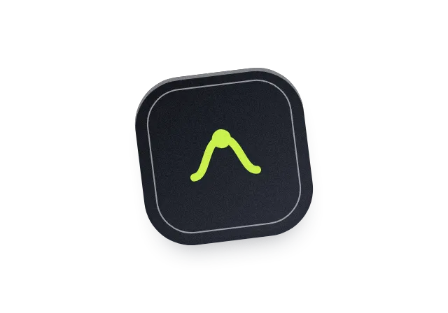
MOTION
사진 교차, 숫자 굴리기, 스크롤 스토리텔링. 60fps로 부드럽게.
HANDOVER
다섯 화면 폭 검수와 호환성 확인을 거쳐, 어느 서버에도 올릴 수 있는 결과물로 전달.
보람찬크루가 구현하는 제작 품질의 기준입니다. 이미지 시안이 아니라 실제 브라우저에서 60fps로 작동하는 결과물을 직접 경험해 보세요.


구성이 정해지면 다섯 단계로 흘러갑니다. 스크롤을 내려 보세요.
메뉴 구성과 참고 사이트를 함께 보며 표현 방식을 맞춥니다.
제작 범위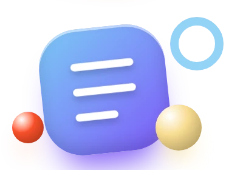
컨셉과 색 톤에 맞춘 시안. 사진이 주인공인 첫 화면.
디자인 시안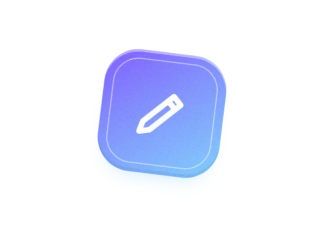
받은 원고·사진을 순서대로 넣고 인터랙션을 붙여요.
가개설 사이트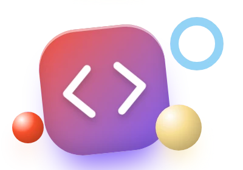
화면 폭 다섯 가지, 60fps, 키보드·접근성, 브라우저 호환성.
검수 보고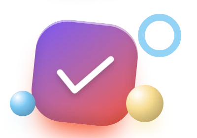
도메인 연결과 서버 인계까지 마무리합니다.
최종 납품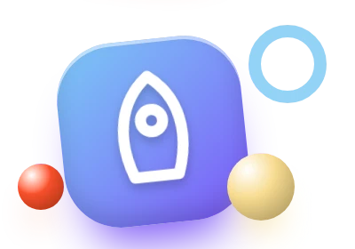
새 작업에 쓸 부품과 움직임을 먼저 만들어 보는 곳. 직접 눌러 볼 수 있어요.
모든 사이트는 같은 컨벤션과 검사를 거쳐요.
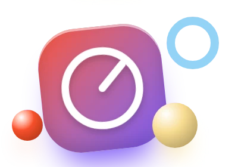
60fps
transform·opacity 위주로 움직이고 실제 브라우저에서 프레임을 재요.
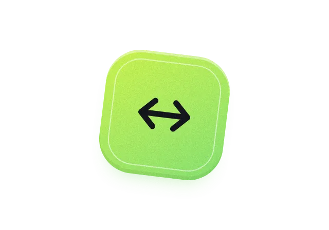
5폭
360~1440px에서 끝까지 스크롤하며 가로 넘침을 검사해요.
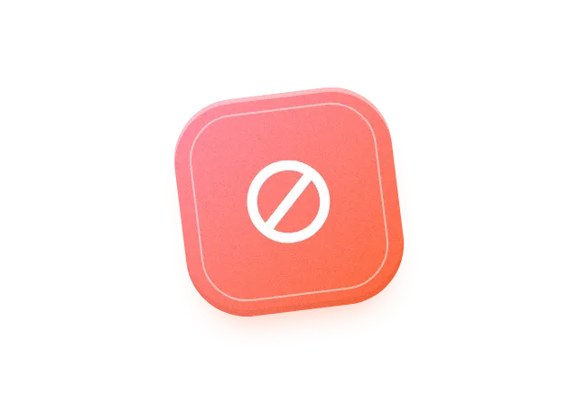
0개
HTML·CSS·순수 JS 모듈. 어느 서버에서도 가볍게.
WebP
WebP로 줄이고 한 장 200KB 이하, 화면 밖 사진은 나중에.
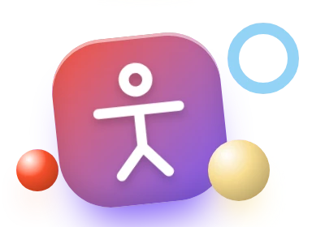
A11y
키보드 이동, 동작 줄이기 존중, 그림 대체 글.
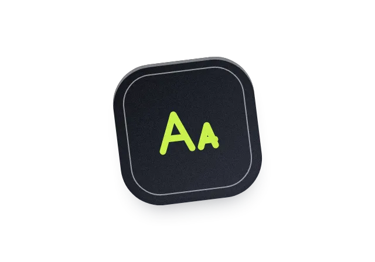
OFL
무료 공개 글꼴만, 사진은 받은 자료만 써요.